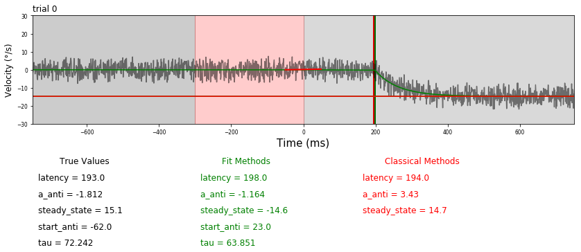
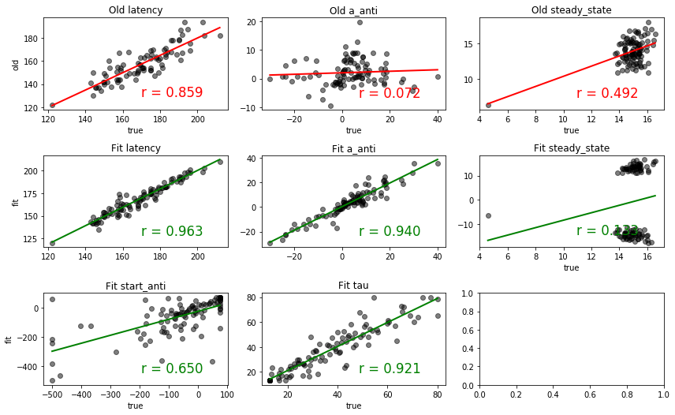

Comparison synthetic with Classical Methods¶
[1]:
from ANEMO import ANEMO
import numpy as np
import matplotlib.pyplot as plt
%matplotlib inline
import lmfit
from lmfit import Model, Parameters
[2]:
import pickle
with open('param_synthetic.pkl', 'rb') as fichier :
param = pickle.load(fichier, encoding='latin1')
with open('name_data_file.pkl', 'rb') as fichier :
exp = pickle.load(fichier, encoding='latin1')
[3]:
Fit = ANEMO.Fit(exp)
Plot = ANEMO.Plot(exp)
[4]:
def regress(ax, p, data, x1, x2, y1, y2, t_label=20, color='r') :
from scipy import stats
slope, intercept, r_, p_value, std_err = stats.linregress(p, data)
x_test = np.linspace(np.min(p), np.max(p), 100)
fitLine = slope * x_test + intercept
ax.plot(x_test, fitLine, c=color, linewidth=2)
ax.text(x2-(x2-x1)/10,y1+(y2-y1)/10, 'r = %0.3f'%(r_), color=color, fontsize=t_label/1.2, ha='right')
return ax
[5]:
def figure(N_trial, N_block=1, bruit=8) :
nb_trial = N_trial*N_block
x = np.arange(0,1500,1)
TargetOn, StimulusOf = 750, 750-300
np.random.seed(7)
metho = {}
for m in ['true', 'fit', 'old'] :
metho[m] = {}
for v in ['latency', 'a_anti', 'steady_state'] : metho[m][v] = []
if m in ['true', 'fit'] :
for v in ['start_anti', 'tau'] : metho[m][v] = []
for b in range(N_block) :
for t in range(N_trial) :
dir_target = exp['p'][t][b][0]*2-1
for v in ['start_anti', 'latency'] : metho['true'][v].append(param[v][b][t]+TargetOn)
for v in ['a_anti', 'tau'] : metho['true'][v].append(param[v][b][t])
test = ANEMO.Equation.fct_velocity(x, dir_target, metho['true']['start_anti'][-1],
metho['true']['a_anti'][-1],
metho['true']['latency'][-1],
metho['true']['tau'][-1], param['maxi'][b][t],
do_whitening=False)
metho['true']['steady_state'].append((param['maxi'][b][t]*dir_target
+ test[int(metho['true']['latency'][-1])])*dir_target)
test += np.random.rand(len(x))*bruit
test -= np.random.rand(len(x))*bruit
old = {}
old['latency'], old['steady_state'], old['a_anti'] = ANEMO.classical_method.Full(test, TargetOn)
f = Fit.Fit_trial(test, equation='fct_velocity', trackertime=None, TargetOn=TargetOn,
StimulusOf=StimulusOf, saccades=[], dir_target=dir_target,
value_latency=old['latency'], value_maxi=old['steady_state'], value_anti=old['a_anti'],
before_sacc=5, after_sacc=15)
fit = ANEMO.Equation.fct_velocity(np.arange(len(test)), dir_target,
f.values['start_anti'], f.values['a_anti'],
f.values['latency'], f.values['tau'],
f.values['steady_state'], do_whitening=False)
steady_state = f.values['steady_state'] *dir_target
for v in ['latency', 'a_anti'] :
metho['fit'][v].append(f.values[v])
metho['old'][v].append(old[v])
metho['fit']['steady_state'].append(steady_state)
metho['old']['steady_state'].append(old['steady_state'])
for v in ['start_anti', 'tau'] : metho['fit'][v].append(f.values[v])
for m in ['true', 'fit', 'old'] : metho[m]['latency'][-1] = metho[m]['latency'][-1]-TargetOn
for m in ['true', 'fit']: metho[m]['start_anti'][-1] = metho[m]['start_anti'][-1]-TargetOn
if t <= 2 :
fig, ax = plt.subplots(1, 1, figsize=(14, 1*(14*1/3)/1.6180))
time_x = np.arange(-750,750)
ax.plot(time_x, test, c='k', alpha=0.5)
ax.plot(time_x, fit, c='g')
ax.bar(f.values['latency']-TargetOn, 60, bottom=-30, color='g', width=4)
ax.plot(time_x, np.ones(len(test))*steady_state, c='g')
ax.bar(old['latency']-TargetOn, 60, bottom=-30, color='r', width=4)
ax.plot(time_x, np.ones(len(test))*old['steady_state']*(dir_target), c='r')
ax.plot(np.arange(-50,50), range(100)*(old['a_anti']/1000), c='r', lw=2)
ax = Plot.deco(ax, StimulusOn=0, StimulusOf=StimulusOf,
TargetOn=TargetOn, TargetOff=1500, t_label=15, saccades=[])
ax.set_ylabel('Velocity (°/s)', fontsize=12)
ax.set_title('trial %s'%t, loc='left')
#ax.plot(np.arange(-750,750), np.ones(len(test))*var_true['steady_state'][-1], c='g')
ax.axis([-750, 750, -30,30])
opt = dict(transform=ax.transAxes, fontsize=12, va='top')
ax.text(0.05, -0.3, 'True Values',color='k', **opt)
ax.text(0.35, -0.3, 'Fit Methods',color='g', **opt)
ax.text(0.65, -0.3, 'Classical Methods',color='r', **opt)
for v, l, r in zip(['latency','a_anti','steady_state','start_anti','tau'],
np.linspace(-0.45, -1.05, 5), [0, 3, 1, 0, 3]) :
for m, c, coco in zip(['true', 'fit', 'old'], np.linspace(0.01, 0.61, 3), ['k', 'g', 'r']) :
try : ax.text(c, l, '%s = %s'%(v, np.round(metho[m][v][-1], r)), color=coco, **opt)
except : pass
plt.show()
fig, axs = plt.subplots(3, 3, figsize=(4*3, (4*3)/1.6180))
for x, v in enumerate(['latency', 'a_anti', 'steady_state', 'start_anti', 'tau']) :
c = 1
if v in ['start_anti', 'tau'] : c, x = 2, (x+1)%2
axs[c][x].set_title('Fit %s'%v)
axs[c][x].scatter(metho['true'][v], metho['fit'][v], c='k', alpha=0.5)
axs[c][x] = regress(axs[c][x], metho['true'][v], metho['fit'][v],
x1=min(metho['true'][v]), x2=max(metho['true'][v]),
y1=min(metho['fit'][v]), y2=max(metho['fit'][v]), color='g')
if v in ['steady_state', 'start_anti', 'tau'] : axs[c][x].set_xlabel('true')
axs[1][0].set_ylabel('fit')
axs[2][0].set_ylabel('fit')
for x, v in enumerate(['latency', 'a_anti', 'steady_state']) :
axs[0][x].set_title('Old %s'%v)
v_true = np.ma.masked_array(metho['true'][v], mask=np.isnan(metho['old'][v])).compressed()
v_old = np.ma.masked_array(metho['old'][v], mask=np.isnan(metho['old'][v])).compressed()
axs[0][x].scatter(v_true, v_old, c='k', alpha=0.5)
axs[0][x] = regress(axs[0][x], v_true, v_old,
x1=min(v_true), x2=max(v_true),
y1=min(v_old), y2=max(v_old))
axs[0][x].set_xlabel('true')
axs[0][0].set_ylabel('old')
plt.tight_layout()
[6]:
figure(N_trial=100)




[ ]: